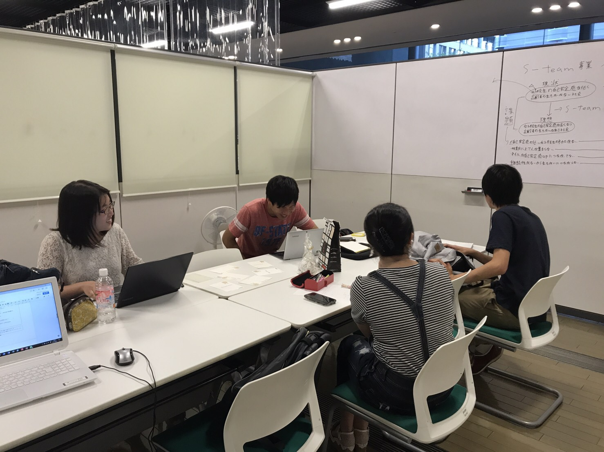
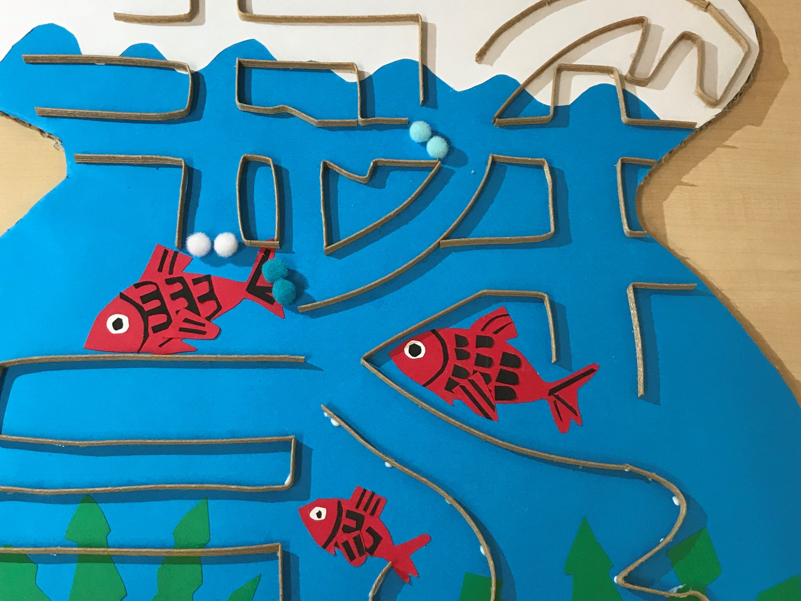
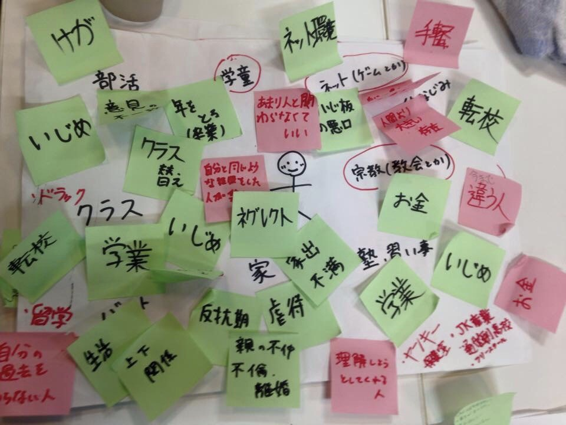
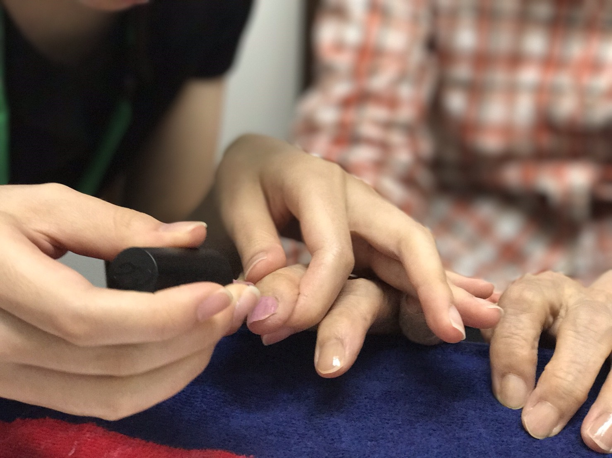

教材研究
 主に小学校での教科内容について、児童がよく躓くポイントの調査し、改善し、実践の場に反映させることを目的に活動します。
教具研究
 低学年の児童や身体障害を患っている子に少しでも、ストレスを減らし本来の教育を受けられるように教具の工夫を目指す活動です。
教育問題
 学校教育だけでは解決しにくくなっているいじめ問題に対して、法律に強い法学部の学生を中心に学校問題(いじめ、不登校等)の新たな解決方法を追究する活動です。
生活教育
 心の問題・体の問題に関して学校だけでは対応できない問題に看護学生が中心に問題解決していく活動です。